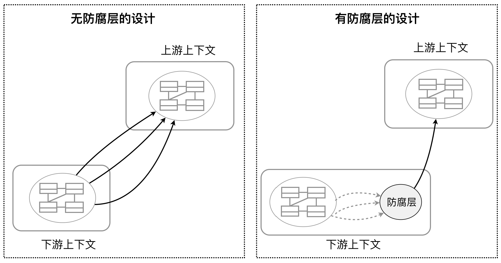

- 001 「战略篇」访谈 DDD 和微服务是什么关系？.md.html
- 002 「战略篇」开篇词：领域驱动设计，重焕青春的设计经典.md.html
- 003 领域驱动设计概览.md.html
- 004 深入分析软件的复杂度.md.html
- 005 控制软件复杂度的原则.md.html
- 006 领域驱动设计对软件复杂度的应对（上）.md.html
- 007 领域驱动设计对软件复杂度的应对（下）.md.html
- 008 软件开发团队的沟通与协作.md.html
- 009 运用领域场景分析提炼领域知识（上）.md.html
- 010 运用领域场景分析提炼领域知识（下）.md.html
- 011 建立统一语言.md.html
- 012 理解限界上下文.md.html
- 013 限界上下文的控制力（上）.md.html
- 014 限界上下文的控制力（下）.md.html
- 015 识别限界上下文（上）.md.html
- 016 识别限界上下文（下）.md.html
- 017 理解上下文映射.md.html
- 018 上下文映射的团队协作模式.md.html
- 019 上下文映射的通信集成模式.md.html
- 020 辨别限界上下文的协作关系（上）.md.html
- 021 辨别限界上下文的协作关系（下）.md.html
- 022 认识分层架构.md.html
- 023 分层架构的演化.md.html
- 024 领域驱动架构的演进.md.html
- 025 案例 层次的职责与协作关系（图文篇）.md.html
- 026 限界上下文与架构.md.html
- 027 限界上下文对架构的影响.md.html
- 028 领域驱动设计的代码模型.md.html
- 029 代码模型的架构决策.md.html
- 030 实践 先启阶段的需求分析.md.html
- 031 实践 先启阶段的领域场景分析（上）.md.html
- 032 实践 先启阶段的领域场景分析（下）.md.html
- 033 实践 识别限界上下文.md.html
- 034 实践 确定限界上下文的协作关系.md.html
- 035 实践 EAS 的整体架构.md.html
- 036 「战术篇」访谈：DDD 能帮开发团队提高设计水平吗？.md.html
- 037 「战术篇」开篇词：领域驱动设计的不确定性.md.html
- 038 什么是模型.md.html
- 039 数据分析模型.md.html
- 040 数据设计模型.md.html
- 041 数据模型与对象模型.md.html
- 042 数据实现模型.md.html
- 043 案例 培训管理系统.md.html
- 044 服务资源模型.md.html
- 045 服务行为模型.md.html
- 046 服务设计模型.md.html
- 047 领域模型驱动设计.md.html
- 048 领域实现模型.md.html
- 049 理解领域模型.md.html
- 050 领域模型与结构范式.md.html
- 051 领域模型与对象范式（上）.md.html
- 052 领域模型与对象范式（中）.md.html
- 053 领域模型与对象范式（下）.md.html
- 054 领域模型与函数范式.md.html
- 055 领域驱动分层架构与对象模型.md.html
- 056 统一语言与领域分析模型.md.html
- 057 精炼领域分析模型.md.html
- 058 彩色 UML 与彩色建模.md.html
- 059 四色建模法.md.html
- 060 案例 订单核心流程的四色建模.md.html
- 061 事件风暴与业务全景探索.md.html
- 062 事件风暴与领域分析建模.md.html
- 063 案例 订单核心流程的事件风暴.md.html
- 064 表达领域设计模型.md.html
- 065 实体.md.html
- 066 值对象.md.html
- 067 对象图与聚合.md.html
- 068 聚合设计原则.md.html
- 069 聚合之间的关系.md.html
- 070 聚合的设计过程.md.html
- 071 案例 培训领域模型的聚合设计.md.html
- 072 领域模型对象的生命周期-工厂.md.html
- 073 领域模型对象的生命周期-资源库.md.html
- 074 领域服务.md.html
- 075 案例 领域设计模型的价值.md.html
- 076 应用服务.md.html
- 077 场景的设计驱动力.md.html
- 078 案例 薪资管理系统的场景驱动设计.md.html
- 079 场景驱动设计与 DCI 模式.md.html
- 080 领域事件.md.html
- 081 发布者—订阅者模式.md.html
- 082 事件溯源模式.md.html
- 083 测试优先的领域实现建模.md.html
- 084 深入理解简单设计.md.html
- 085 案例 薪资管理系统的测试驱动开发（上）.md.html
- 086 案例 薪资管理系统的测试驱动开发（下）.md.html
- 087 对象关系映射（上）.md.html
- 088 对象关系映射（下）.md.html
- 089 领域模型与数据模型.md.html
- 090 领域驱动设计对持久化的影响.md.html
- 091 领域驱动设计体系.md.html
- 092 子领域与限界上下文.md.html
- 093 限界上下文的边界与协作.md.html
- 094 限界上下文之间的分布式通信.md.html
- 095 命令查询职责分离.md.html
- 096 分布式柔性事务.md.html
- 097 设计概念的统一语言.md.html
- 098 模型对象.md.html
- 099 领域驱动设计参考过程模型.md.html
- 100 领域驱动设计的精髓.md.html
- 101 实践 员工上下文的领域建模.md.html
- 102 实践 考勤上下文的领域建模.md.html
- 103 实践 项目上下文的领域建模.md.html
- 104 实践 培训上下文的业务需求.md.html
- 105 实践 培训上下文的领域分析建模.md.html
- 106 实践 培训上下文的领域设计建模.md.html
- 107 实践 培训上下文的领域实现建模.md.html
- 108 实践 EAS 系统的代码模型.md.html
- 109 后记：如何学习领域驱动设计.md.html
- 捐赠
019 上下文映射的通信集成模式
无论采用何种设计，限界上下文之间的协作都是不可避免的，应用边界的上下文映射模式会以更加积极的态度来应对这种不可避免的协作；从设计的角度来讲，就是不遗余力地降低限界上下文之间的耦合关系。防腐层与开放主机服务的目的正是如此。
防腐层（Anticorruption Layer）
防腐层其实是设计思想“间接”的一种体现。在架构层面，通过引入一个间接的层，就可以有效隔离限界上下文之间的耦合，这个间接的防腐层还可以扮演“适配器”的角色、“调停者”的角色、“外观”的角色，没错，这都是 GOF 设计模式中常见的几种结构型模式。
防腐层往往属于下游限界上下文，用以隔绝上游限界上下文可能发生的变化。因为不管是遵奉者模式，还是客户方-供应方模式，下游团队终究可能面临不可掌控的上游变化。在防腐层中定义一个映射上游限界上下文的服务接口，就可以将掌控权控制在下游团队中，即使上游发生了变化，影响的也仅仅是防腐层中的单一变化点，只要防腐层的接口不变，下游限界上下文的其他实现就不会受到影响。
我们可以通过下图来对比引入防腐层的价值：

显然，在没有引入防腐层时，下游上下文可能存在多处对上游上下文领域模型的依赖，一旦上游发生变更，就会影响到下游的多处实现；引入防腐层后，之前产生的多处依赖转为对防腐层的依赖，再由防腐层指向上游上下文，形成单一依赖。上游变更时，影响的仅仅是防腐层，下游上下文自身并未受到影响。
用以对付遗留系统时，防腐层可谓首选利刃。我在前面讲解限界上下文对遗留系统的应对时，已经述及采用“抽象分支”与“防腐层”的手法。对于遗留系统，我们不能粗暴地用新系统取代它，而应采用渐进的手段尽可能重用它的资产，剔除不好的设计与实现，完成逐步替换；我们可以将遗留系统视为一个整体的限界上下文，然后为调用它的下游上下文建立防腐层。由于防腐层是我们自己掌控的，就可以在其内动动手脚，例如，从调用者角度思考需要公开的服务接口，并引入领域驱动设计为其提炼出清晰的领域模型，然后再从遗留系统中去寻找对应的实现，慢慢将合适的代码搬移过来，适时对其重构。这种做法既保有了新设计的新鲜感，不受技术债的影响，又不至于走向极端，对旧有系统大动干戈，可谓选择了一条“中庸之道”，能够新旧并存地小步前行。
开放主机服务（Open Host Service）
如果说防腐层是下游限界上下文对抗上游变化的利器，那么开放主机服务就是上游服务用来吸引更多下游调用者的诱饵。设计开放主机服务，就是定义公开服务的协议，包括通信的方式、传递消息的格式（协议）。同时，也可视为是一种承诺，保证开放的服务不会轻易做出变化。
开放主机服务常常与发布语言（Published Language）模式结合起来使用。当然，在定义这样的公开服务时，为了被更多调用者使用，需要力求语言的标准化，在分布式系统中，通常采用 RPC（Protocol Buffer）、WebService 或 RESTful。若使用消息队列中间件，则需要事先定义消息的格式，例如，在我参与过的一个分布式 CIMS（计算集成制造系统）中，客户端与服务端以及服务端之间的通信皆以消息形式传递，我们定义了如下的消息格式：
Message——Name
——ID
——Body（MessageItemSequence）
——Value
——Item（MessageItem）
——SubValue
——SubItem（MessageItem）
采用这种消息格式，几乎所有的分布式服务都可以抽象为这样的接口：
public interface RemotingService {
/**
* @param serviceName为需要调用的远程服务名
* @param request为Message类型的request消息
* @return 返回Message类型的response消息
* @throws 自定义的RemotingException，其中包含的message仍然为Message结构，表达Error
*/
Message execute(String serviceName, Message request) throws RemotingException;
}
为了降低上游与下游限界上下文之间的依赖，防腐层与开放主机服务都是一种有效的手段，前者归属于下游限界上下文的范围，后者则属于上游限界上下文的边界，但二者是存在区别的，上游限界上下文作为被依赖方，往往会被多个下游限界上下文消费，如果需要引入防腐层，意味着需要为每个下游都提供一个几乎完全相似的防腐层，导致了防腐层的重复。因此，倘若上、下游限界上下文都在开发团队内部，又或者二者之间建立了良好的团队协作，我更倾向于在上游限界上下文中定义开放主机服务。当然，在极端情况下，可能需要在为上游限界上下文提供开放主机服务的同时，还需要为下游限界上下文定义防腐层。
在绘制上下文映射图时，我们往往用 ACL 缩写来代表防腐层，用 OHS 缩写代表开放主机服务。
发布/订阅事件
即使是确定了发布语言规范的开放主机服务，仍然会导致两个上下文之间存在耦合关系，下游限界上下文必须知道上游服务的 ABC（Address、Binding 与 Contract），对于不同的分布式实现，还需要在下游定义类似服务桩的客户端。例如，在基于 Spring Cloud 的微服务架构中，虽然通过引入 Euraka 实现了对服务的注册与发现，降低了对 Address、Binding 的依赖，但仍然需要在下游限界上下文定义 Feign 客户端，你可以将这个 Feign 客户端理解为是真实服务的一个代理（Proxy）。基于代理模式，我们要求代理与被代理的真实服务（Subject）保持相同的接口，这就意味着，一旦服务的接口发生变化，就需要修改客户端代码。
采用发布/订阅事件的方式可以在解耦合方面走得更远。一个限界上下文作为事件的发布方，另外的多个限界上下文作为事件的订阅方，二者的协作通过经由消息中间件进行传递的事件消息来完成。当确定了消息中间件后，发布方与订阅方唯一存在的耦合点就是事件，准确地说，是事件持有的数据。由于业务场景通常较为稳定，我们只要保证事件持有的业务数据尽可能满足业务场景即可。这时，发布方不需要知道究竟有哪些限界上下文需要订阅该事件，它只需要按照自己的心意，随着一个业务命令的完成发布事件即可。订阅方也不用关心它所订阅的事件究竟来自何方，它要么通过 pull 方式主动去拉取存于消息中间件的事件消息，要么等着消息中间件将来自上游的事件消息根据事先设定的路由推送给它，通过消息中间件，发布方与订阅方完全隔离了。在上下文映射中，这种基于发布/订阅事件的协作关系，已经做到了力所能及的松耦合极致了。
以电商购物流程为例，从买家搜索商品并将商品加入到购物车开始，到下订单、支付、配送完成订单结束，整个过程由多个限界上下文一起协作完成。倘若以发布/订阅事件作为这些限界上下文之间的协作模式，则发布和订阅事件的流程如下所示：
如果将发布事件的限界上下文定义为上游，订阅事件的限界上下文定义为下游，则下表展现了事件在上下游限界上下文之间的流转：
| ID | Event | Upstream Context | Downstream Context |
|---|---|---|---|
| 1 | ProductSelected | Product Context | Basket Context |
| 2 | OrderRequested | Basket Context | Order Context |
| 3 | InventoryRequested | Order Context | Inventory Context |
| 4 | AvailabilityValidated | Inventory Context | Order Context |
| 5 | OrderValidated | Order Context | Payment Context |
| 6 | PaymentProcessed | Payment Context | Order Context |
| 7 | OrderConfirmed | Order Context | Shipment Context |
| 8 | ShipmentDelivered | Shipment Context | Order Context |
采用发布/订阅事件模式的限界上下文不必一定是分布式架构，关键在于负责传递事件的介质是什么？如果采用独立进程运行的消息中间件，例如 RabbitMQ 或者 Kafka，可以更加有效地利用资源，整个系统的可伸缩性会变得更好。然而，考虑到进程间通信带来的成本，以及维护事务一致性带来的阻碍，我们也可以开发运行在同一个 JVM 进程中的事件总线（Event Bus）来负责事件的发布和订阅。我们还可以采用 Actor 模式支持事件的发布与订阅，Actor 会维持一个 mailbox，它相当于是一个轻量级的消息队列。以电商系统为例，例如，Order Context 的 OrderActor 接收 OrderRequested 事件，Basket Context 的 BasketActor 负责处理 ConfirmBasket 命令：
class BasketActor(eventPublisher: ActorRef) extends Actor with ActorLogging {
def receive: Receive = {
case cmd: ConfirmBasket =>
// compose OrderRequested event with product list
eventPublisher ! OrderRequested(cmd.customerId(), cmd.products())
}
}
class OrderActor extends Actor with ActorLogging {
def receive: Receive = {
case event: OrderRequested =>
// validate order
}
}
发布/订阅事件模式是松耦合的，但它有特定的适用范围，通常用于异步非实时的业务场景。当然，它的非阻塞特性也使得整个架构具有更强的响应能力，因而常用于业务相对复杂却没有同步要求的命令（Command）场景。这种协作模式往往用于事件驱动架构或者 CQRS（Command Query Responsibility Segregation，命令查询职责分离）架构模式中。
© 2019 - 2023 Liangliang Lee. Powered by gin and hexo-theme-book.